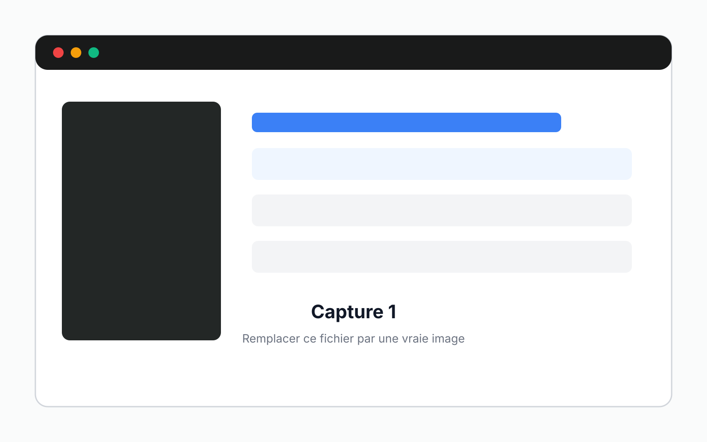
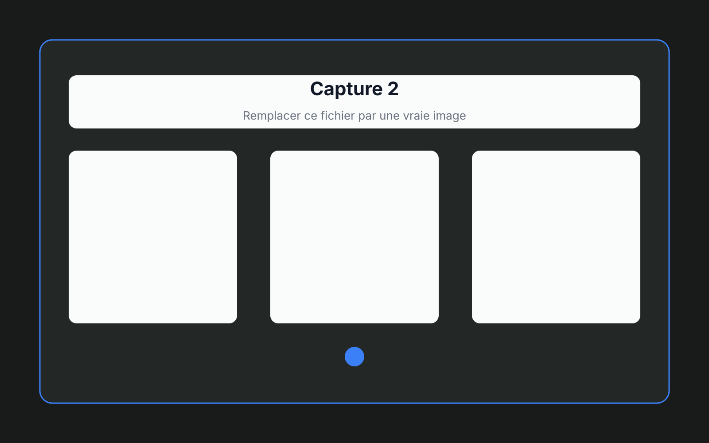
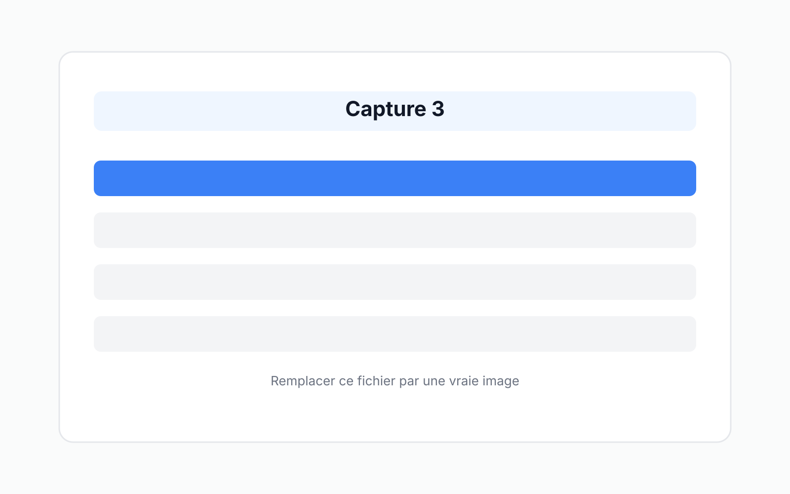
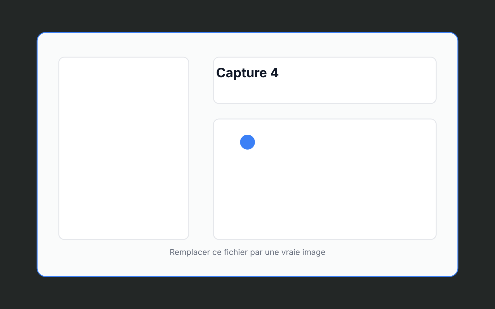

Gestion des compétitions
Créez vos compétitions, renseignez les dates, le lieu, les tarifs et retrouvez-les facilement pour les modifier ou les supprimer.
Gérez vos compétitions de tir sportif plus simplement.
Aim Display aide les clubs à organiser leurs compétitions, suivre les scores et afficher les résultats simplement.




Les fonctionnalités essentielles pour organiser une compétition, suivre les participants et partager des résultats clairs.
Créez vos compétitions, renseignez les dates, le lieu, les tarifs et retrouvez-les facilement pour les modifier ou les supprimer.
Inscrivez chaque tireur avec son club, sa compétition, sa distance, son arme, sa catégorie et sa classification para-tir si besoin.
Gardez une liste claire des clubs engagés afin de rattacher rapidement les tireurs à leur structure.
Lancez un affichage plein écran pour que les tireurs et le public suivent le classement par catégorie de la compétition en temps réel.
Générez des rapports PDF avec les classements, les résultats détaillés, les statistiques d'inscription, les scores et les recettes du club.
Éditez un bilan par tireur avec ses résultats, ses statistiques et des conseils personnalisés à partir de ses performances.
Aim Display s'adresse aux clubs de tir sportif qui souhaitent :
Organiser des compétitions simplement
Préparer les évenements sportifs en avance ou le jour J, inscrire les tireurs et suivre les résultats à l'aide d'un seul outil.
Gagner du temps le jour du concours
Limiter les ressaisies et retrouver rapidement les informations utiles pendant la compétition.
Présenter des résultats clairs
Afficher les classements en temps réel au public et remettre des rapports propres et détaillés aux tireurs.
1. Préparez la compétition
Créez le concours, ajoutez les clubs et inscrivez les tireurs.
2. Saisissez les résultats
Renseignez les scores au fil de la compétition. Le classement public se met à jour automatiquement.
3. Affichez le classement
Lancez l'affichage sur un second écran, ou une télévision connectée à un PC, pour que les participants suivent les
résultats.
4. Partagez les rapports
Générez les PDF en fin de concours, conservez un exemplaire pour le club et remettez un rapport personnalisé à chaque
tireur.
Saisissez et mettez à jour les informations rapidement, avant ou pendant l'événement.
Les fonctions essentielles dont un club a besoin, au même endroit.
Développé par un tireur, pour les tireurs, avec les retours de clubs.
Conservez une trace claire et détaillée avec des PDF prêts à être partagés.
Installez l'application sur l'ordinateur du club et préparez votre prochaine compétition dans un outil conçu pour le tir sportif.
Prérequis
Version 1.0.6
Installation
Téléchargez l'installateur, lancez-le, puis ouvrez Aim Display. Créez un compte sur l'application, et c'est parti !